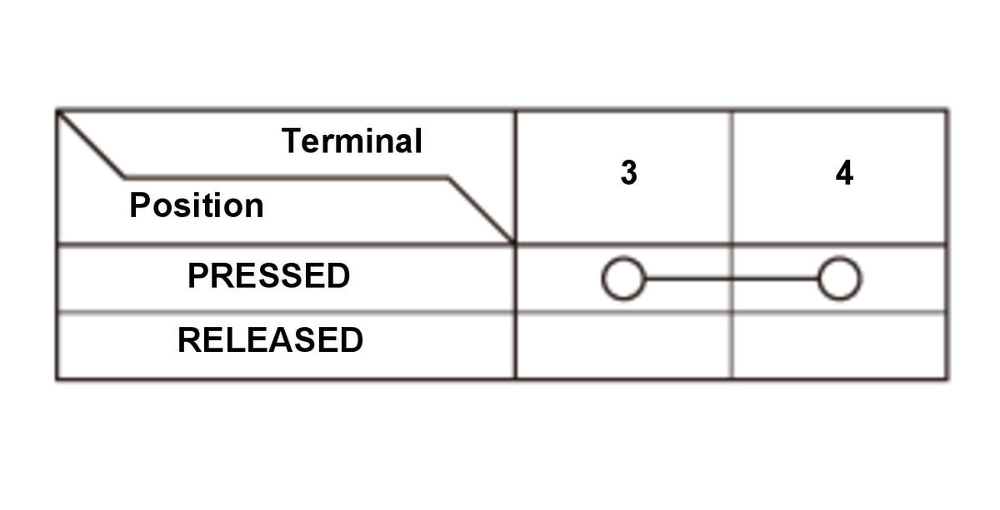
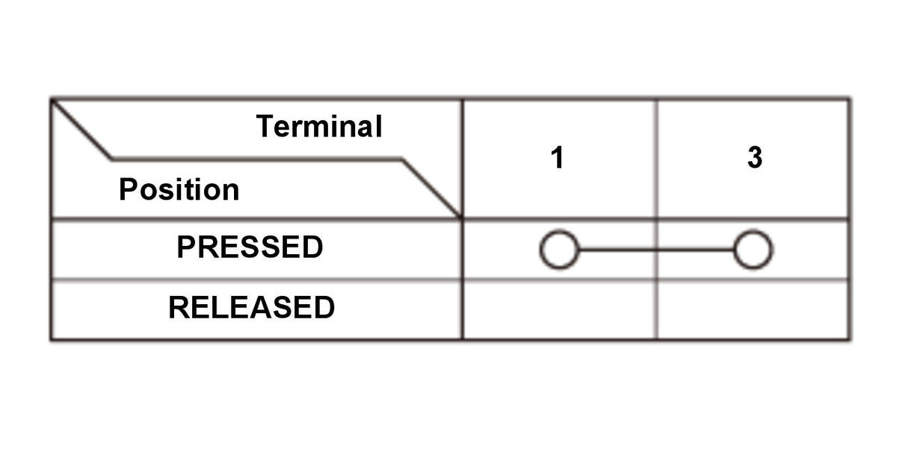
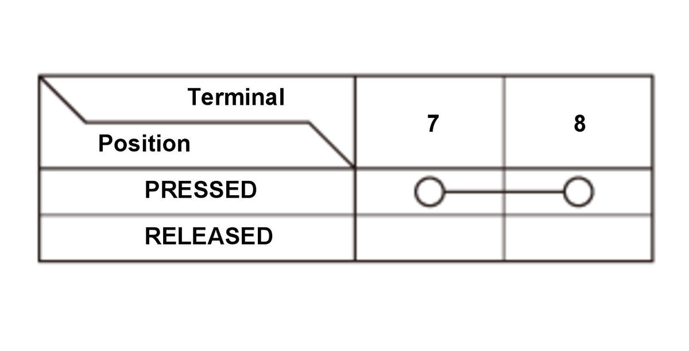

VSA Off Switch Removal, Installation, and Test: Test
- VSA Off Switch - Test
VSA OFF switch 4P connector type 


Courtesy of HONDA, U.S.A., INC.HONDA, U.S.A., INC.HONDA, U.S.A., INC.HONDA, U.S.A., INC.HONDA, U.S.A., INC.HONDA, U.S.A., INC.Courtesy of HONDA, U.S.A., INC.HONDA, U.S.A., INC.HONDA, U.S.A., INC.HONDA, U.S.A., INC.HONDA, U.S.A., INC.HONDA, U.S.A., INC.VSA OFF switch 5P connector type
Courtesy of HONDA, U.S.A., INC.HONDA, U.S.A., INC.HONDA, U.S.A., INC.HONDA, U.S.A., INC.HONDA, U.S.A., INC.HONDA, U.S.A., INC.Courtesy of HONDA, U.S.A., INC.HONDA, U.S.A., INC.HONDA, U.S.A., INC.HONDA, U.S.A., INC.HONDA, U.S.A., INC.HONDA, U.S.A., INC.VSA OFF switch 8P connector type
Courtesy of HONDA, U.S.A., INC.HONDA, U.S.A., INC.HONDA, U.S.A., INC.HONDA, U.S.A., INC.HONDA, U.S.A., INC.HONDA, U.S.A., INC.1. On the switch side, check for continuity between the connector terminal in each switch position according to the table. 2. If the switch does not works as described in the table, replace the VSA OFF switch.